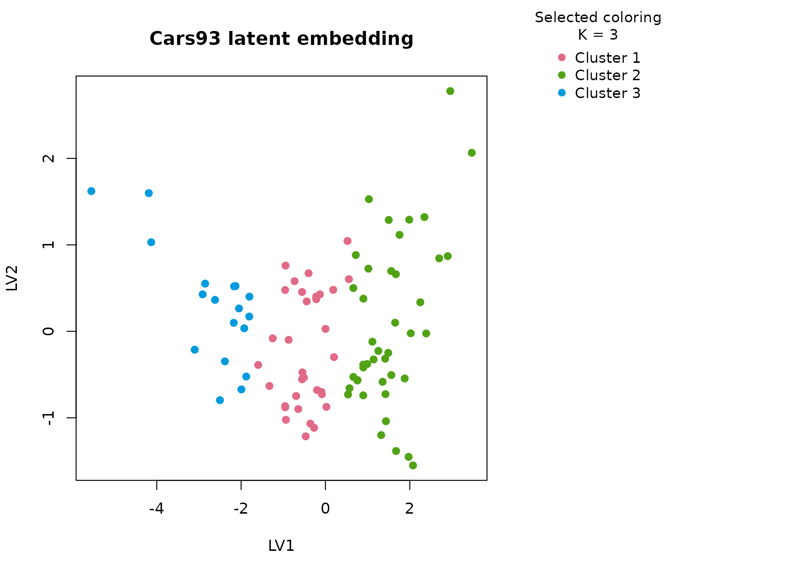

Background
Cars93 contains prices, performance, origin, drivetrain,
and body type for cars sold in the early 1990s. It is a practical
transport-market table with a rich mix of numeric and categorical
descriptors. It is well suited to uccdf because numerical
scale alone does not fully define a market segment: body type, origin,
and drivetrain all contribute to how a car is positioned.
Objective
The aim is to identify stable market segments from the vehicle specification table and to test whether those segments align with recognizable product positioning differences such as economy-oriented cars, heavier higher-power models, and intermediate mixed-use vehicles.
Data preparation
cars93_df <- MASS::Cars93
cars93_df$sample_id <- sprintf("C%03d", seq_len(nrow(cars93_df)))
cars93_df$Cylinders <- ordered(as.character(cars93_df$Cylinders), levels = c("3", "4", "5", "6", "8", "rotary"))
analysis_cars93 <- cars93_df[, c(
"sample_id", "Price", "MPG.city", "MPG.highway", "Horsepower", "Weight",
"Type", "Origin", "DriveTrain", "Cylinders"
)]
head(analysis_cars93)
#> sample_id Price MPG.city MPG.highway Horsepower Weight Type Origin
#> 1 C001 15.9 25 31 140 2705 Small non-USA
#> 2 C002 33.9 18 25 200 3560 Midsize non-USA
#> 3 C003 29.1 20 26 172 3375 Compact non-USA
#> 4 C004 37.7 19 26 172 3405 Midsize non-USA
#> 5 C005 30.0 22 30 208 3640 Midsize non-USA
#> 6 C006 15.7 22 31 110 2880 Midsize USA
#> DriveTrain Cylinders
#> 1 Front 4
#> 2 Front 6
#> 3 Front 6
#> 4 Front 6
#> 5 Rear 4
#> 6 Front 4Analysis
fit_cars93 <- fit_uccdf(
analysis_cars93,
id_column = "sample_id",
candidate_k = 1:5,
n_resamples = 20,
n_null = 39,
row_fraction = 0.85,
col_fraction = 0.85,
seed = 555
)
fit_cars93$selection
#> $alpha
#> [1] 0.05
#>
#> $global_p_value
#> [1] 0.025
#>
#> $null_family
#> [1] "independence_marginal_null"
#>
#> $detected_structure
#> [1] TRUE
#>
#> $best_exploratory_k
#> [1] 3
#>
#> $best_supported_k
#> [1] 3
select_k(fit_cars93)
#> k stability null_mean null_sd stability_excess z_score p_value supported
#> 1 2 0.4408780 0.2413262 0.02975131 0.1995518 6.707324 0.025 TRUE
#> 2 3 0.7025875 0.1516975 0.02194218 0.5508900 25.106428 0.025 TRUE
#> 3 4 0.6132028 0.1601077 0.02258329 0.4530951 20.063283 0.025 TRUE
#> 4 5 0.6319489 0.1934873 0.02556749 0.4384616 17.149177 0.025 TRUE
#> objective
#> 1 6.568694
#> 2 24.886705
#> 3 19.786024
#> 4 16.827290Results
cars93_assign <- merge(augment(fit_cars93), cars93_df, by.x = "row_id", by.y = "sample_id", all.x = TRUE)
head(cars93_assign)
#> row_id cluster confidence ambiguity exploratory_cluster
#> 1 C001 1 0.7845914 0.21540863 1
#> 2 C002 2 0.9670363 0.03296373 2
#> 3 C003 2 0.9202935 0.07970653 2
#> 4 C004 2 0.9675765 0.03242354 2
#> 5 C005 2 0.9689653 0.03103469 2
#> 6 C006 1 0.9294827 0.07051727 1
#> exploratory_confidence exploratory_ambiguity assignment_mode selected_k
#> 1 0.7845914 0.21540863 selected 3
#> 2 0.9670363 0.03296373 selected 3
#> 3 0.9202935 0.07970653 selected 3
#> 4 0.9675765 0.03242354 selected 3
#> 5 0.9689653 0.03103469 selected 3
#> 6 0.9294827 0.07051727 selected 3
#> exploratory_k Manufacturer Model Type Min.Price Price Max.Price MPG.city
#> 1 3 Acura Integra Small 12.9 15.9 18.8 25
#> 2 3 Acura Legend Midsize 29.2 33.9 38.7 18
#> 3 3 Audi 90 Compact 25.9 29.1 32.3 20
#> 4 3 Audi 100 Midsize 30.8 37.7 44.6 19
#> 5 3 BMW 535i Midsize 23.7 30.0 36.2 22
#> 6 3 Buick Century Midsize 14.2 15.7 17.3 22
#> MPG.highway AirBags DriveTrain Cylinders EngineSize Horsepower
#> 1 31 None Front 4 1.8 140
#> 2 25 Driver & Passenger Front 6 3.2 200
#> 3 26 Driver only Front 6 2.8 172
#> 4 26 Driver & Passenger Front 6 2.8 172
#> 5 30 Driver only Rear 4 3.5 208
#> 6 31 Driver only Front 4 2.2 110
#> RPM Rev.per.mile Man.trans.avail Fuel.tank.capacity Passengers Length
#> 1 6300 2890 Yes 13.2 5 177
#> 2 5500 2335 Yes 18.0 5 195
#> 3 5500 2280 Yes 16.9 5 180
#> 4 5500 2535 Yes 21.1 6 193
#> 5 5700 2545 Yes 21.1 4 186
#> 6 5200 2565 No 16.4 6 189
#> Wheelbase Width Turn.circle Rear.seat.room Luggage.room Weight Origin
#> 1 102 68 37 26.5 11 2705 non-USA
#> 2 115 71 38 30.0 15 3560 non-USA
#> 3 102 67 37 28.0 14 3375 non-USA
#> 4 106 70 37 31.0 17 3405 non-USA
#> 5 109 69 39 27.0 13 3640 non-USA
#> 6 105 69 41 28.0 16 2880 USA
#> Make
#> 1 Acura Integra
#> 2 Acura Legend
#> 3 Audi 90
#> 4 Audi 100
#> 5 BMW 535i
#> 6 Buick Century
aggregate(
cbind(Price, MPG.city, MPG.highway, Horsepower, Weight, confidence) ~ cluster,
cars93_assign,
function(x) round(mean(x, na.rm = TRUE), 2)
)
#> cluster Price MPG.city MPG.highway Horsepower Weight confidence
#> 1 1 16.15 22.79 29.79 122.21 2850.91 0.88
#> 2 2 26.28 18.17 25.14 186.29 3604.40 0.94
#> 3 3 9.88 31.39 37.00 84.39 2239.72 0.90
table(cars93_assign$cluster, cars93_assign$Type)
#>
#> Compact Large Midsize Small Sporty Van
#> 1 15 0 7 5 6 0
#> 2 1 11 15 0 6 9
#> 3 0 0 0 16 2 0
table(cars93_assign$cluster, cars93_assign$Origin)
#>
#> USA non-USA
#> 1 18 15
#> 2 25 17
#> 3 5 13
table(cars93_assign$cluster, cars93_assign$DriveTrain)
#>
#> 4WD Front Rear
#> 1 3 27 3
#> 2 6 23 13
#> 3 1 17 0
round(prop.table(table(cars93_assign$cluster, cars93_assign$Type), margin = 1), 3)
#>
#> Compact Large Midsize Small Sporty Van
#> 1 0.455 0.000 0.212 0.152 0.182 0.000
#> 2 0.024 0.262 0.357 0.000 0.143 0.214
#> 3 0.000 0.000 0.000 0.889 0.111 0.000
plot_embedding(fit_cars93, color_by = "selected", main = "Cars93 latent embedding")
plot_consensus_heatmap(fit_cars93, main = "Cars93 consensus heatmap")Discussion
The selected three-cluster solution is well matched to the dataset
because the vehicle space is visibly multi-modal. The numeric summaries
usually separate a lighter, higher-efficiency cluster from a heavier,
more powerful cluster, with a third group occupying the middle of the
market. The Type and DriveTrain tables make
this easier to read: the clusters are not arbitrary numeric slices, but
mixtures of body format, engineering style, and performance level.
This is also a good example of why a mixed workflow matters. If we clustered on price and horsepower alone, some body-type information would be lost. Here the consensus segmentation remains anchored in numeric structure but becomes easier to name because categorical descriptors move with the clusters rather than being ignored.
Interpretation
For Cars93, the clusters are best interpreted as stable
market segments such as economy-oriented cars, mid-range mixed vehicles,
and heavier higher-power models. The precise marketing label is less
important than the fact that the partition is stable across resamples,
visible in the heatmap, and supported against the null baseline rather
than being a one-off clustering artifact.